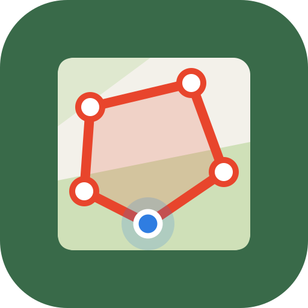
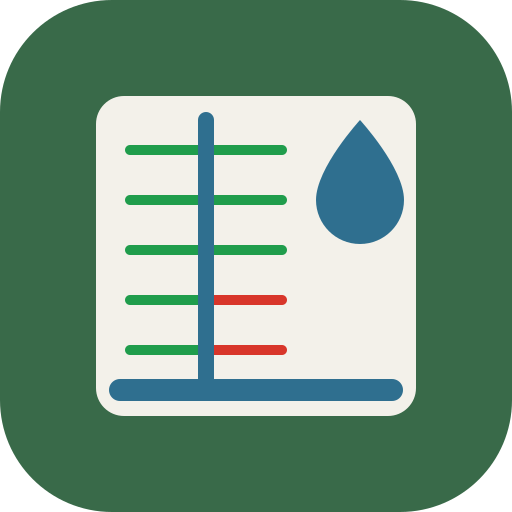

Una família d'apps, una per a cada pregunta
Totes comparteixen el mateix mapa, les mateixes dades obertes i la mateixa manera de treballar. Si en saps fer servir una, les saps fer servir totes.
Ja disponibles
-

Terra Bloc
Com és aquest terreny en 3D?
Models 3D del relleu per veure'ls a la pantalla o imprimir-los.
Maquetes, docència, regals, impressió 3D
Obre l'app -

Terra Rutes
Com és aquesta ruta?
Obre tracks GPX o KML, mira'n el perfil i el relleu 3D, uneix-los i edita'ls.
Senderisme, ciclisme, curses de muntanya
Obre l'app -

Terra Parcel·les
On són i com són les meves parcel·les?
Desa les parcel·les del Cadastre amb notes, fotos i etiquetes, agrupa-les en finques i obre-les a les altres apps.
Propietaris, pagesos, gestors de finques
Obre l'app
En desenvolupament
Aquestes apps encara les estic acabant. Arribaran a Google Play quan estiguin a punt.
-

Terra Anàlisi
Quin pendent i quina orientació té?
Altitud, pendents, orientacions i ombrejat d'una parcel·la, amb estadístiques i informe PDF.
Agricultura, forestal, enginyeria, peritatges
En desenvolupament -

Terra Visibilitat
Què es veu des d'aquí?
La conca visual d'un punt sobre el relleu, amb l'alçada de l'observador i de l'objectiu.
Antenes, internet rural, incendis, impacte visual
En desenvolupament -

Terra Sol
Quantes hores de sol hi toquen?
Hores de sol directe d'un punt o d'una parcel·la, amb l'ombra de les muntanyes, qualsevol dia de l'any.
Cultius, hivernacles, plaques solars, cases
En desenvolupament -

Terra Camp
Coincideix la meva parcel·la amb el Cadastre?
Mesura una parcel·la sobre el terreny amb el GPS del mòbil i compara-la amb la del Cadastre.
Propietaris, pagesos, tècnics de camp
En desenvolupament -

Terra Reg
Arriba l'aigua a tot arreu?
Dissenya el reg per goteig d'una parcel·la i comprova si el cabal arriba a tots els trams.
Pagesos, horts, instal·ladors de reg
En desenvolupament -

Custòdia
Com gestiono les meves finques?
Registra parcel·les rústiques, consulta'n el Cadastre, el pendent i un índex experimental de risc d'incendi.
Propietaris rurals, entitats de custòdia
En desenvolupament
Com funcionen
-
Gratuïtes, amb un Pro de pagament únic
Cada app es pot fer servir de franc. Les funcions avançades es desbloquegen amb un sol pagament, sense subscripcions.
-
Les teves dades no surten del dispositiu
No hi ha comptes ni servidor propi. Les zones, els tracks i les parcel·les es desen només al teu mòbil o ordinador.
-
Dades públiques i obertes
El relleu i les imatges vénen de l'IGN i del Cadastre a Espanya, i de fonts mundials obertes a la resta del món.
-
Sense instal·lar res
S'obren al navegador i es poden afegir a la pantalla d'inici. Aviat, també a Google Play.
Programari lliure, sempre que es pot
Som partidaris del programari lliure: fem servir eines lliures, hi contribuïm i, sempre que el projecte ho permet, publiquem el codi amb llicència lliure.
Les apps tenen una versió gratuïta per a tothom i un Pro de pagament únic. És el que fa que el projecte es pugui sostenir i continuar creixent, amb preus justos i sense subscripcions.